写在最前面：切换npm源。
npm config get registry
npm config set registry https://registry.npm.taobao.org
这里简单的记录一下：Vue3 + webpack下的多入口demo。该demo并没有使用
这是第一步，仅仅是Vue3 + webpack的组合，只是弄了个多入口。没有使用单文件组件、
先看一下demo目录结构，编译前后做个对比：
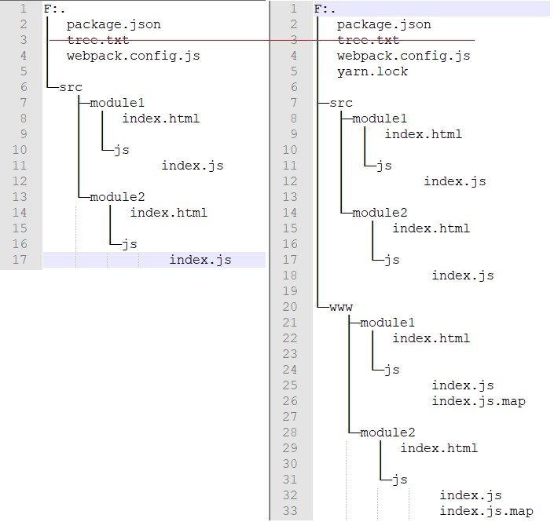
上面的对比图中，你可以忽略tree.txt文件，该文档中的内容是项目的目录结构也就是上图中的内容。你可以使用下面的命令生成目录结构文件：
tree /f >tree.txt
这里展示一下模块1（模块1和模块2只是1和2的区别）下的入口页面html（路径为：/src/module1/index.html）和js（路径为：/src/module1/js/index.js）：
import * as Vue from "vue";
Vue.createApp({
data() {
return {
msg: "Hi，这里是 Vue3 + webpack 多入口 示例项目 模块1 入口页面"
}
}
}).mount('#vue3Module1Entry');
下面是 package.json
{
"name": "vue3-webpack-multi-entry-demo",
"version": "1.0.0",
"main": "index.js",
"license": "MIT",
"scripts": {
"start": "webpack --progress --watch"
}
}
yarn add vue@next
yarn add html-webpack-plugin webpack webpack-cli -D
下面是 webpack.config.js
// yarn add vue@next
// yarn add html-webpack-plugin webpack webpack-cli -D
const path = require('path');
const webpack = require('webpack');
const HtmlWebPack = require('html-webpack-plugin');
let multiPageConfig = [{
entry: {
sourcePath: "./src/module1/js/index.js",
// entry.key中以'/'分割，最后一项是文件的名称，前面的都是目录
targetPath: "module1/js/index"
},
htmlWebPack: {
sourcePath: './src/module1/index.html',
targetPath: 'module1/index.html'
}
}, {
entry: {
sourcePath: "./src/module2/js/index.js",
targetPath: "module2/js/index"
},
htmlWebPack: {
sourcePath: './src/module2/index.html',
targetPath: 'module2/index.html'
}
}];
let tempModuleExportsObj = {
mode: 'development', // production | development
devtool: "source-map",
entry: {},
output: {
filename: '[name].js',
path: path.resolve(__dirname, './www'),
//publicPath: '/'
// 为了可以在github上可以浏览，这里做下面的修改
publicPath: '/vue3/www/'
},
module: {
rules: []
},
resolve: {
alias: {
// [Vue warn]: Component provided template option but runtime compilation is not supported in this build of Vue. Configure your bundler to alias "vue" to "vue/dist/vue.esm-bundler.js".
'vue': 'vue/dist/vue.esm-bundler.js'
}
},
plugins: [
// Feature flags __VUE_OPTIONS_API__, __VUE_PROD_DEVTOOLS__ are not explicitly defined. You are running the esm-bundler build of Vue, which expects these compile-time feature flags to be globally injected via the bundler config in order to get better tree-shaking in the production bundle.
new webpack.DefinePlugin({
__VUE_OPTIONS_API__: true,
__VUE_PROD_DEVTOOLS__: false,
})
]
};
multiPageConfig.forEach(singlePage => {
let tempEntryObj = {};
tempEntryObj[singlePage.entry.targetPath] = singlePage.entry.sourcePath;
Object.assign(tempModuleExportsObj.entry, tempEntryObj);
let tempHtmlWebPackOption = {
inject: true,
hash: true, //开启hash ?[hash]
chunks: [singlePage.entry.targetPath], //页面要引入的包
};
Object.assign(tempHtmlWebPackOption, {
template: singlePage.htmlWebPack.sourcePath,
filename: singlePage.htmlWebPack.targetPath
});
tempModuleExportsObj.plugins.push(new HtmlWebPack(tempHtmlWebPackOption));
});
module.exports = tempModuleExportsObj;
先来张图看看结构的变化
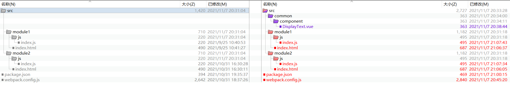
既然是单文件组件，先来一个，尽量简单（路径为：/src/common/component/DisplayText.vue）：就是展示一些文本。下面是组件代码：
{{value}}
两个html页面都添加下面的内容
对应的js文件用下面的替换（记得改一下两个页面的区别）
import * as Vue from "vue";
import DisplayText from '../../common/component/DisplayText.vue';
Vue.createApp({
data() {
return {
msg: "Hi，这里是 Vue3 + webpack 多入口 示例项目 模块1 入口页面",
displayText: "再说一遍，这里是 模块1 入口页面",
displayTextStyle: {
fontWeight: "bold"
}
}
},
components: {
DisplayText
}
}).mount('#vue3Module1Entry');
新增
yarn add vue@next
yarn add @vue/compiler-sfc html-webpack-plugin vue-loader@next webpack webpack-cli -D
引入
// 第二版：添加的内容
const {
VueLoaderPlugin
} = require('vue-loader');
let tempModuleExportsObj = {
module: {
rules: [
// 第二版：添加的内容
{
test: /\.vue$/,
use: ['vue-loader']
}
]
},
plugins: [
// 第二版：添加的内容
new VueLoaderPlugin()
]
};
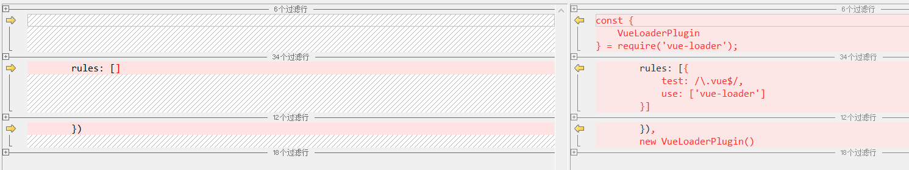
还是先来张图看看结构的变化
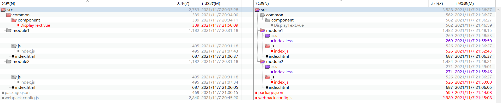
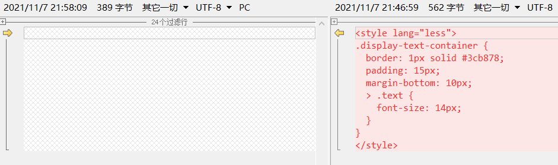
*,
*::before,
*::after {
box-sizing: border-box;
}
html,
body {
height: 100%;
width: 100%;
margin: 0;
}
#vue3Module1Entry {
height: 100%;
width: 100%;
padding: 20px;
overflow: hidden;
color: #fff;
}
import '../css/index.less';
新增
yarn add vue@next
yarn add @vue/compiler-sfc css-loader html-webpack-plugin less less-loader style-loader vue-loader@next webpack webpack-cli -D
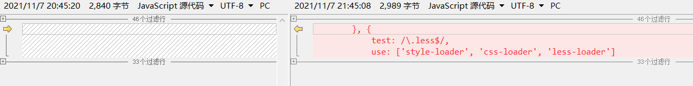
单文件组件引入图片、html页面引入图片、LESS样式文件引入文件……还是先来张图看看结构的变化
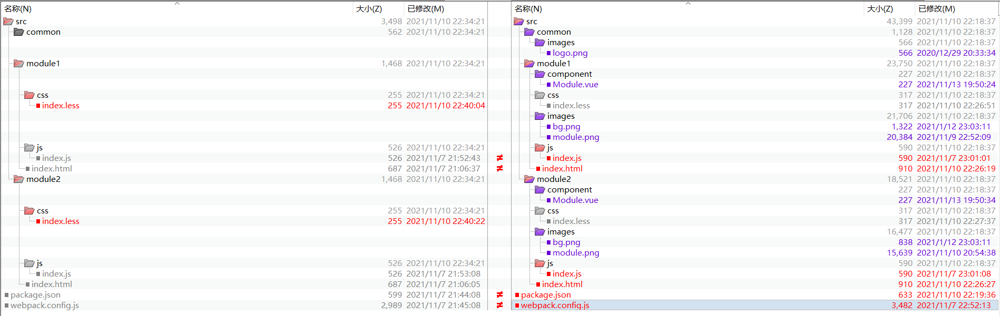
新添加的单文件组件和一些图片就不说了，html和js也只是引入了这些……
新增
yarn add vue@next
yarn add @vue/compiler-sfc css-loader html-loader html-webpack-plugin less less-loader style-loader vue-loader@next webpack webpack-cli -D
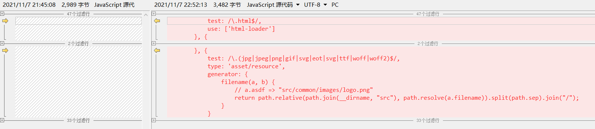
记得上次写的时候是通过
转ES6在真实项目中用的太多了，之前在vue2.x的时候也弄了，但是此时按照原来的方式写出现了一些问题，最后发现竟然是
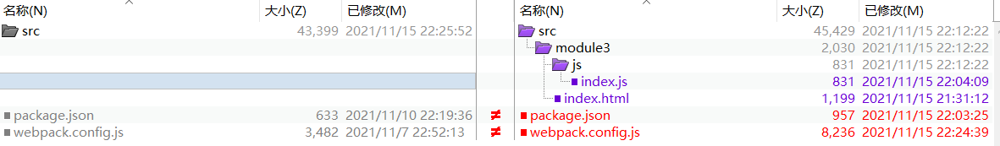
原来的vue相关的代码没有变动，只是增加了一个新的模块（module3）来测试ES5的转换。
新增转ES5需要的依赖，这里有点多就不列了。有两种实现方式，在
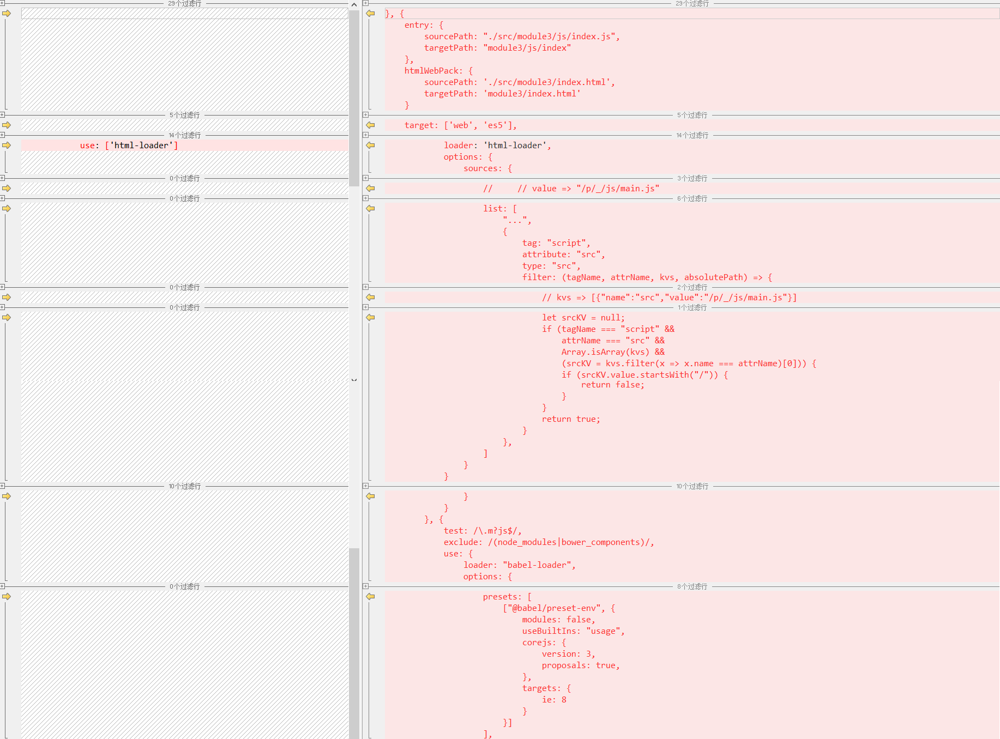
图片中的代码对比：一些注释代码给忽略了，看详细的你可以下载代码。
默认打包时将依赖和业务代码都弄到一个JS中了，看着不舒服，希望打包之后的代码也有一个清晰的结构，仅仅是为了看着舒服……看一下目录变化
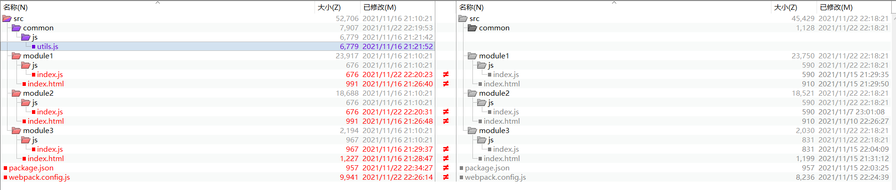
自己整理的一些通用JS方法，放到了utils.js中。三个入口页面都引入其中的某个方法并使用……
这次并没有添加新的依赖，上图中的变化是版本的升级。
webpack.config.js添加下面的配置型
{
optimization: { // 优化项
splitChunks: { //分割代码块
cacheGroups: { // 缓存
'my': { // 自己整理的通用方法
priority: 100,
name: "common/js/common", // 以'/'分割，最后一项是文件的名称，前面的都是目录
test: /[\\/]src[\\/](common)[\\/]/,
chunks: 'initial',
minSize: 0,
minChunks: 1,
filename: '[name].js'
},
'core-js': { // 抽取第三方模块：core-js
priority: 10,
name: 'core-js',
test: /[\\/]node_modules[\\/](core-js)[\\/]/,
chunks: 'initial',
minSize: 0,
minChunks: 1,
filename: 'lib/[name]/[name].js'
},
'vue': { // 抽取第三方模块：vue
priority: 9,
name: 'vue',
test: /[\\/]node_modules[\\/](@vue|vue|vue-loader)[\\/]/,
chunks: 'initial',
minSize: 0,
minChunks: 1,
filename: 'lib/[name]/[name].js'
},
'other': { // 公共的代码
priority: 8,
name: "other",
chunks: 'initial',
minSize: 0,
minChunks: 2, // 这个代码引用多少次才需要抽离
filename: 'lib/[name]/[name].js'
}
}
}
}
}